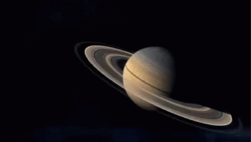

Saturno es el sexto planeta del sistema solar contando desde el Sol, el segundo en tamaño y masa después de Júpiter y el único con un sistema de anillos visible desde la Tierra. Su nombre proviene del dios romano Saturno. Forma parte de los denominados planetas exteriores o gaseosos. El aspecto más característico de Saturno son sus brillantes y grandes anillos. Antes de la invención del telescopio, Saturno era el más lejano de los planetas conocidos y, a simple vista, no parecía luminoso ni interesante. El primero en observar los anillos fue Galileo en 1610, pero la baja inclinación de los anillos y la baja resolución de su telescopio le hicieron pensar en un principio que se trataba de grandes satélites. Christiaan Huygens, con mejores medios de observación, pudo en 1659 observar con claridad los anillos. James Clerk Maxwell, en 1859, demostró matemáticamente que los anillos no podían ser un único objeto sólido sino que debían ser la agrupación de millones de partículas de menor tamaño. Las partículas que componen los anillos de Saturno giran a una velocidad de 48 000 km/h, 15 veces más rápido que una bala.
| Característica | Saturno |
|---|---|
| Distancia orbital (km) | 1.426.666.422 |
| Radio ecuatorial (km) | 58.238 |
| Volumen (km3) | 827.129.915.150.897 |
| Masa (kg) | 568.319 x1021 |
| Densidad (g/cm3) | 0,687 |
| Gravedad en superficie (m/s2) | 10,4 |
| Velocidad de escape (km/h) | 129.924 |
| Duración del día | 10 horas, 34 minutos |
| Duración del año | 29 años terrestres |
| Velocidad de su órbita alrededor del Sol (km/h) | 34.701 |
| Composición de la atmósfera (exosfera) | Hidrógeno y Helio |
| Lunas descubiertas | 83 |
Saturno está formado por gases (en su mayoría hidrógeno y helio), su volumen es 755 veces mayor que el de la Tierra y tiene una densidad de 0,687 gramos por centímetro cúbico (una densidad menor que la del agua). En el hipotético caso de que el planeta se posara sobre un inmenso océano de agua, no se hundiría, sino que flotaría.El planeta no tiene una superficie sólida, excepto por algunas nubes congeladas de amoníaco o de hidrosulfuro de amoníaco, que se encuentran diseminadas sobre la superficie gaseosa.
En lo más profundo, cerca de su núcleo, el hidrógeno se encuentra comprimido a tal punto que se vuelve líquido. Su núcleo pareciera ser más pesado y rocoso, conformado por elementos metálicos como hierro y silicatos.Los vientos que se generan en la atmósfera pueden alcanzar los 1.800 kilómetros por hora que, al fusionarse con el calor que emerge desde el interior del planeta, crean unas bandas amarillas y doradas que son visibles desde la Tierra (al observarlas a través de un telescopio). La temperatura promedio en su superficie es de -130º centígrados.Saturno tarda 11 horas terrestres en girar sobre su propio eje (el movimiento de rotación) y 29 años, aproximadamente, en hacer una órbita completa alrededor del Sol (el movimiento de traslación). Su eje tiene una inclinación de 26,73 grados respecto a su órbita solar (similar a la inclinación que tiene el eje terrestre, de 23,5 grados).
Saturno posee 53 satélites naturales y al menos 29 lunas que continúan siendo estudiadas para comprobar que sean satélites (es decir, aún no se corroboró si se mantienen en órbita constante alrededor del planeta).Los satélites de Saturno muy variados, algunos están formados por gases y cubiertos de neblina (como Titán), otros están formados por superficies sólidas llenas de cráteres (como Phoebe). Prometeo y Pandora son dos de los satélites más pequeños que orbitan cerca del sistema de anillos y contribuyen a modelar la estructura de los halos debido a su propia fuerza gravitatoria.
El mayor de los satélites es Titán y se caracteriza por tener una atmósfera (rica en metano), algo poco común para una luna. El resto de los satélites que pertenecen al grupo de los más grandes son: Mimas, Encélado, Tetis, Dione, Rea, Hiperión, Japeto y Febe.Los científicos investigan especialmente a Titán (por ser la luna más grande y por su notoria atmósfera), a Encélado (porque existe la posibilidad de contenga agua líquida a poca profundidad de su superficie) y a las lunas Hiperión y Japeto (que se caracterizan por contener, casi en su totalidad, agua helada).
El sistema de anillos de Saturno en gran parte está compuesto por agua helada y desprendimientos rocosos de diversos tamaños. Se distribuyen en dos grupos que están separados por la “división de Cassini”: los anillos A (exteriores) y los anillos B (interiores) según su cercanía a la superficie del planeta.El nombre de la división surgió por su descubridor, Giovanni Cassini, un astrónomo italiano naturalizado francés que, en 1675, detectó esa separación de 4.800 kilómetros de ancho. El grupo B está conformado por cientos de anillos, algunos elípticos que muestran variaciones de densidad ondulante debido a la interacción gravitacional entre los anillos y los satélites. |
 |
Existen evidencias de que, en el año 700 a.C., los asirios describieron al planeta anillado como un destello en la noche y lo llamaron “estrella de Ninib”. Alrededor del 400 a.C. los antiguos astrónomos griegos nombraron Kronos a la que consideran una estrella errante y luego, los romanos, le cambiaron el nombre por Saturno, padre de Júpiter.En 1610 Galileo Galilei observó a través de un telescopio y pudo identificar a dos objetos que acompañaban al planeta y lo denominó un “planeta triple”. Galileo no logró reconocer la forma de esos dos objetos, pero sí pudo notar que permanecían en posición respecto al cuerpo celeste.La gran incógnita que acechaba a los científicos de la época era cómo podrían esos objetos permanecer alrededor de Saturno sin romperse o colisionar con el planeta.
En 1659 el astrónomo Christiaan Huygens logró identificar con un telescopio de gran alcance que los dos objetos que rodeaban a Saturno eran anillos aplanados. En 1857 el científico James Clerk Marxwell predijo, mediante fórmulas matemáticas, que la composición de los anillos consistía en numerosas partículas pequeñas.
En 1979 la sonda “Voyager” enviada por la NASA fue la primera en llegar a Saturno y logró recopilar información suficiente para corroborar la teoría de Marxwell.
En 1997 la sonda Cassini-Huygens fue lanzada con el objetivo de sobrevolar bien de cerca a Saturno. Años después, esta expedición obtuvo información valiosa: imágenes, datos sobre ondas, movimientos de las nubes y detalles de los anillos, entre otros.
En 2005 la sonda Huygens enviada por la Agencia Espacial Europea (ESA de su sigla en inglés) fue la primera nave en realizar un aterrizaje en la superficie de la luna Titán. Logró llevar a cabo el primer estudio de la atmósfera y del relieve del satélite natural a través de imágenes directas.
En 2017 la nave Cassini finalizó su misión luego de 13 años de actividad, enviando datos hasta su último momento. Las últimas cinco órbitas de Cassini brindaron información clave y de manera directa acerca de la atmósfera de Saturno.
Tamaños comparativos de los planetas terrestres, Jupiter a la izquierda, Saturno, Urano y Neptuno.